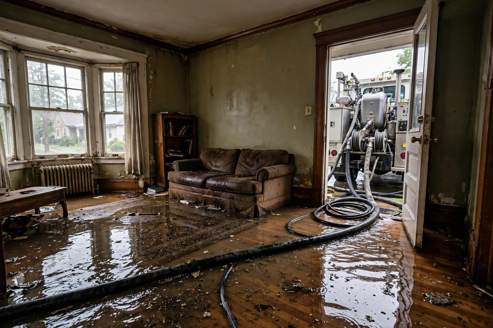

Water In Now? We Extract It Fast.
Burst pipe, failed water heater, storm surge — standing water gets pulled out before it wicks into walls and subfloors.
What happens when you call
Stop the source
We talk you through shutting off water and power safely while the crew is on the way.
Extract
Truck-mounted and portable extractors pull standing water from floors, carpets, and low spots.
Measure
Meters map how far water traveled into walls and under flooring — including places that look dry.
Stabilize
Air movers and dehumidifiers start immediately so drying begins the same visit, not days later.

Caldwell emergencies we see most
Winter pipe bursts
January cold snaps split supply lines in unheated garages and crawl spaces across Caldwell's older neighborhoods.
Water heater failures
Aging tank heaters in utility closets let go without warning, flooding adjacent rooms in minutes.
Indian Creek overflows
Heavy spring runoff can push creek water into low-lying properties near downtown.
Appliance supply lines
Refrigerator ice-maker lines and washing machine hoses are quiet leakers that become sudden floods.
A family returns from a weekend trip to find the laundry room under an inch of water — a supply hose split Saturday morning. Extraction starts within the hour of their call, and drying equipment runs for three days while moisture readings are tracked.
Water where it should not be?
Call now. We will talk you through the first safe steps and get a crew moving.
Open 24 hours · Serving Caldwell and Canyon County
What NOT to do with standing water
- Do not use a household vacuum — only wet-rated extractors are safe
- Do not turn on ceiling lights or fans in wet rooms until checked
- Do not pull up carpet yourself if the water may be contaminated
- Do not wait until morning — mold can start within 24 to 48 hours on wet drywall
- Do not throw away damaged items before photographing them for insurance
Minutes matter with water
Every hour standing water sits, it climbs higher into drywall and deeper into subfloors. The sooner extraction starts, the smaller the repair.
Questions, answered plainly
How fast can you get here?
We answer around the clock and dispatch as quickly as possible. While waiting, shut off the water main if a pipe burst and move valuables to dry ground.
What should I do before you arrive?
If it is safe: stop the source, turn off power to wet areas, and move rugs and electronics. Do not wade into water near electrical outlets or panels.
Do you handle sewage water?
Category 3 water — sewage or outdoor floodwater — needs special handling with protective equipment and disinfection. Tell us what you are dealing with when you call so we arrive prepared.
Will my carpet have to go?
It depends on the water type and how long it sat. Clean water extracted quickly often saves carpet; contaminated water usually means removal. We explain the call before deciding.
Does homeowners insurance cover this?
Sudden events like burst pipes are often covered; gradual leaks usually are not. We document everything with photos and moisture logs that help with claims.
After extraction: the drying phase
Pulling standing water is only the first half. What follows determines whether the job sticks.
Targeted airflow
Air movers angle into wall bases and under toe-kicks where water hides. Random fan placement wastes time; aimed airflow dries cavities.
Dehumidification
Commercial dehumidifiers pull gallons of moisture from the air daily. Residential units cannot keep pace with a soaked structure.
Daily monitoring
Meters track wall and floor moisture until readings hold steady at safe levels. Equipment comes out only when the numbers say so.